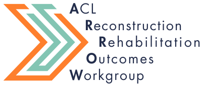
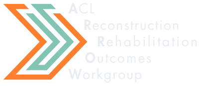

Shared data for every step of ACL recovery
Clinicians and researchers at 15 sites pooling return-to-sport testing data to learn what good recovery after ACL reconstruction looks like.
Why ARROW exists
Before returning to sport after ACL reconstruction, patients are tested on strength, hopping, and how they feel about their knee. Most clinics collect these measures on their own, with too few patients to say what's typical for, say, a 16-year-old with a patellar tendon graft six months after surgery.
ARROW pools de-identified testing data from member sites into one registry, now covering 4,000+ patients. With numbers at that scale, we can describe recovery by age, sex, graft type, and time since surgery, and give clinicians a fair point of comparison for the patient in front of them.
What we work on
-
A shared registry
Combine return-to-sport testing from clinics and labs across the country using common measures and definitions.
-
Reference values
Describe expected strength, hop, and patient-reported results for patients like yours, by age, sex, graft source, and time since surgery.
-
Tools for clinicians
Put the registry to work in clinic through DART, a free dashboard for comparing a patient's results with their peers.
-
What shapes recovery
Study the factors beyond the knee, like psychological readiness, activity level, and where patients live, that influence outcomes and second injury.
DART
The Dashboard for ACL Reconstruction Testing
Enter a patient's test results and see how they compare with ARROW patients of similar age, sex, graft source, and time since surgery. Print a report to review with your patient. Data you enter isn't stored by the dashboard.
Member sites
Clinics and labs contributing data to ARROW.
Select a marker to see the sites in that city. Numbers show cities with more than one site.
Recent publications
Contact ARROW
If your clinic or lab collects return-to-sport testing after ACL reconstruction, we'd like to hear from you. We're always looking to add sites and collaborators.